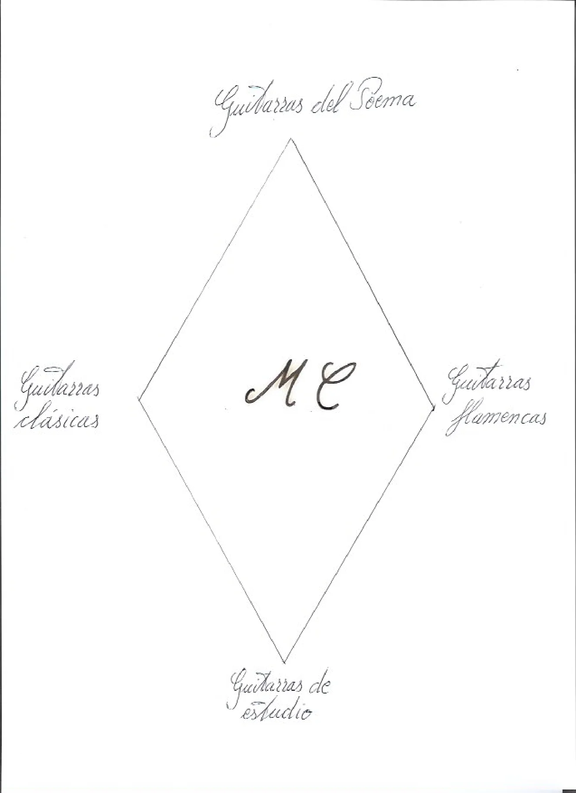

Selecting the right wood for aguitarIt is a fundamental aspect that defines both its sound quality and its distinctive character. Throughout history, the evolution in guitar construction has been marked by experimentation with different woods and techniques, always seeking the perfect balance between tradition and innovation.
Guitar building is an art that combines ancient knowledge with modern innovation. From traditional "white" cypress flamenco guitars to modern variants that incorporate exotic woods, each choice of material significantly influences the final result of the instrument.
In this article we will explore in detail the different woods used in guitar construction, their specific properties, and how these characteristics affect the final sound of the instrument. We will analyze both traditional options and the most recent innovations in the field of luthiery, providing a complete guide to understanding the importance of material selection in the construction of these musical instruments.
What wood to choose depending on the type of guitar?
The traditional flamenco guitar was always made of cypress wood and afircalled "white" guitar
In the 1970s, a little earlier, perhaps "black" guitars for flamenco began to be built made of rosewood from Brazil or India.
Following the «Boom» of the genius Paco de Lucia,my grandfather Mariano Conde Salamanca and his brother Faustino Conde Salamanca(Conde Esteso's brothers and nephews, the second generation) built him more focused black guitars for his big concerts and tours where the guitar needed more volume and without losing our characteristic flamenco sound and pulsation-comfort.
Another curious detail is that traditionally the tops for flamenco guitars were made of spruce 90% of the time and the other 10% of cedar, a situation that as the years have progressed more cedar tops have been incorporated, currently being 70% spruce and 30% cedar.
Since the guitar construction sector and our house are so traditional, although wood of other species were purchased, they were rarely or never used for day-to-day construction and this situation has led to us having very dry cut wood, not only the most traditional woods such as cypress and different palo santos but alsoWe have seasoned woods that are more than 50 years old, including some that are almost centuries old, such as mahogany, majagua, dorado, maple, sycamore, spruce and cedar tops, etc.
Another innovation as a result of the problem that there are fewer and fewer traditional woods left and at higher prices is the eternal search for sound, where there is the incorporation of other new woods such as exotic ebony, macassar, madagascar rosewood, sapele pomelé, koa, cocobolo...etc (we are talking about 20-40 years ago this year approximately.
The classical concert guitar has always been built with rosewood from Brazil and India and here we do find that the spruce and cedar tops have always been made of almost 50%.
We have also been incorporating new species and the old ones that have stagnated due to the passage of time and the situations previously mentioned.
What are the most chosen woods and why?
The most chosen woods are traditional onesby the same weight of time that they are the most viewed and listened to:
- Inflamenco guitar: cypress, Indian rosewood or Brazilian rosewood with a spruce or cedar top.
- In theclassical concert guitar: rosewood from India and Brazil with spruce or cedar top
Although, as we said before, having good and very dry woods with that constant concern of wanting to improve not the beauty of the furniture but also the sound, clients, whether professionals or amateurs, place their trust in us and these new species, not so new in many cases as we explained before (which have been abandoned due to the passage of time and ultra-tradition) and guitars are coming out outside of this "jack, horse, king" in terms of the choice of more traditional woods and giving rise to these other not so woods. views and with a great aesthetic and sound result.
What are the most important physical properties to consider when selecting woods for guitars?
It is essential to have good, very dry wood to build a guitar, and of course just as important is knowing what to do with it.
Once we have covered the good, dry material and the construction knowledge of the trade, we look for the sum of hard and soft woods to achieve the result after numerous construction steps and hours until we finally see the figure and shape of a guitar.
Essential physical properties
Rigidity and elasticity
The rigidity, measured by the coefficient of elasticity along the grain, is a crucial property, especially for soundboards and the overall construction of the instrument. This featureIt determines the wood's ability to transmit vibrations and directly affects the quality of the sound.
Density and weight
The density of the wood directly influences the propagation of sound within the instrument. Woods have different densities ranging from 400-460 kg/m³ in woods such as fir, to 1,195 kg/m³ in hard woods such as ebony.
Humidity and stability
Moisture content is essential for several reasons:
- The wood must be properly dried to avoid warping and cracking.
- The natural drying process requires, at a minimum, 10 to 20 years for the construction of guitars depending on the species.
- Dimensional changes in wood are directly related to its moisture content.
Structural features
- Lignification is a crucial process that affects the final sound, where cells become enriched in lignin and minerals.
- The grain and direction of the grain influence the stability and acoustic properties of the instrument.
- Wood shrinkage varies depending on the direction (tangential, radial or longitudinal).
Durability and resistance
The wood must have good resistance to wear and environmental factors, considering that:
- The duration varies depending on the species and environment.
- Resistance to changes in temperature and humidity is crucial to the longevity of the instrument.
- Hardwoods are used strategically in high-wear areas such as the fingerboard and for its stability.
Know all the types of guitar wood:
- Fir wood
- mahogany wood
- Canadian red cedar wood
- ebony wood
- maple wood
- Koa wood
- Indian Rosewood
- Rosewood from Madagascar
- Brazilian Rosewood
What sound differences do the different selected woods contribute to the final instrument?
Always looking for the pure flamenco soundof theflamenco guitarin this case, accompanied by the necessary volume along with comfort and we look for this regardless of the woods although it is true that some give a different volume in theory or a brighter sound with other woods. but as we said it is just theory since many times you can find a guitar built with certain woods that sounds different than it should (not bad, different) and that is the beauty of this craft, we work with living material no matter how dry it is and there are never two identical guitars even if they are made at the same time, with the same woods, tools, glues and time.
Inclassical concert guitarExactly the same thing happens but here we always look for a sound with more volume and clearer notes, you cannot have that "broken" and at the same time very flamenco sound of the same flamenco guitar "worth the redundancy."
It is incredible how similar a classical concert and flamenco guitar can be, they can match the woods but a completely different sound is sought.
Also here we have to make a point and talk about the «Poem guitars» and «Guitars of the double cover poem» since that is why they were born and break with everything said above:
These guitars have the particularity of having the best of the winery that we talked about previously, the best quality of wood in our opinion and the oldest woods, often becoming century-old woods.
Each of the "Guitars of the poem" can be, and in fact are, prototypes of new guitar models since the bracing system is not repeated in their construction and all the "guts" inside them are different and new. This is achieved after much analysis, testing, study of materials and guitar-making know-how transmitted from one generation to another. Hence the dedication in time and work that makes this model and its "double lid" variant require a long construction process.
The quality of the «Poem guitars» They place them, as my father Mariano Conde Cavia (3rd generation) comments, at the upper vertex of an imaginary rhombus where studio guitars, classical guitars and flamenco guitars are framed. At the lower vertex of the rhombus are the studio ones, guitars on which you can play both one thing and another as well as accompaniment and chords, leaving their quality much to be desired. Going up the hypothetical rhombus, on the sides there are those specific for classical and on the other those for flamenco, good guitars designed for one thing or another. Rising to the top apex, at the top of the "podium", are the guitars extraordinary in terms of touch and sound quality. Instruments that allow us to play any type of music and that fill any guitarist, amateur or professional, with total guitar satisfaction. That initial separation that from the lower vertex (the studio guitars) leads us towards a classical or flamenco specialization, in a subsequent ascent towards the upper vertex gives rise to a reunion in which both characteristics and sound properties are added.
In order to materialize the above, “Guitarra del Poema” No. 56, “Rombo” was born.
